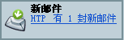

您可通过 Netscape 邮件和新闻组功能在一处方便地管理所有互联网上通信。您可在“邮件和新闻组”窗口内设置和维护多个公司、个人邮件帐户和互联网新闻组，全部工作都可在一个窗口中。另外，您还可从“邮件和新闻组”窗口访问 Netscape 网际邮件以及 AOL 邮件帐户。
开始使用 Netscape 邮件和新闻组：
|
|||
| 邮件和新闻组图标 | |||
| 本节内容包括： |
| 本节内容包括： |
要设置一个邮件帐户或新闻组帐户，首先打开“窗口”菜单并选择“邮件和新闻组”。如果您还没设置一个帐户，系统会自动显示“帐户向导”，使您能够设置一个帐户。
帐户向导会引导您完成创建新帐户的过程。如果您不了解某个设置，单击“取消”并询问您的互联网服务供应商（ISP）或帮助台。
如果已有一个帐户，则帐户向导不会在“邮件”窗口打开时自动出现。而在打开“邮件”窗口后，打开“文件”菜单并选择“新建”，然后选择“帐户”。详细说明，请参见设置另外的邮件和新闻邮件帐户。
美国在线（AOL）是许多最受欢迎的互联网服务供应商之一。Netscape 网际邮件是一种免费的邮件服务，它使用容易并在任何地方都能使用。
如果您已经有 AOL 或 Netscape 网际邮件帐户，则可用“帐户向导”设置 Netscape 的邮件和新闻组，以从该帐户存取邮件。从“编辑”菜单，选择“邮件和新闻组帐户设置”，然后单击“添加帐户”。
如果您还没有设立 Netscape 网际邮件帐户，则可通过单击文件夹窗格中的“免费网际邮件”图标注册一个免费帐户。
备注：在设置和使用 AOL 或 Netscape 网际邮件帐户之前，您必须安装 AOL 快信信使。（在缺省情况下，AOL 快信信使将在安装 Netscape 7.0 时一并安装）。
在您设置邮件帐户之前，您的 ISP 或电子邮件供应商应该提供下列信息：
在开立新闻组帐户之前，您的 ISP 或电子邮件供应商应该提供下列信息：
要设置新的邮件帐户或新闻组帐户，请从“邮件”窗口开始：
帐户向导需要的信息取决于在其第一个窗口中所指定的新帐户的类型。在设置 ISP 或电子邮件供应商帐户时，您将对应于不同的窗口看到下列黑体字的标题。
在这里还必须指定接收邮件服务器和发送邮件服务器（SMTP）的名字。这是发送邮件的服务器的名字（也称为 SMTP 主机）。单击“下一步”继续。
备注：即使您有几个邮件帐户，您也只需要指定一个发送邮件服务器（SMTP）。在提供给您的帐户设置信息中，您的 SMTP 主机的名字可能没有明确的列出。例如，您的 SMTP 主机可能与 POP 或 IMAP 主机的名字相同。如有任何疑问，请与您的 ISP 或系统管理员联系。
现在可以从您的帐户接收邮件了。有关详细说明，请参见获取新邮件。
[ 返回到本节开始处 ]
您可用“帐户设置”对话框添加新帐户，或更改现有帐户的信息，其中包括：
要添加新帐户或更改现有帐户的设置，请从“邮件”窗口开始：
缺省帐户是一启动“邮件和新闻组”时您想登录并（仅对于 IMAP 帐户）自动检查新邮件的帐户。（对于 POP 帐户，每次您必须单击“获取邮件”按钮来获取新邮件。）
[ 返回到本节开始处 ]
要查看或更改一个现有邮件帐户或新闻组帐户的信息，请从“邮件”窗口开始：
重要事项：如果您需要改变服务器的类型（例如，从 POP 改编为 IMAP），必须首先删除已有的帐户。接着，必须退出 Netscape 并重新启动。然后重新打开“邮件和新闻组帐户设置”对话框并通过单击“添加帐户”以重新创建一个具有新服务器类型的帐户。
[ 返回到本节开始处 ]
如果使用 AOL 快信信使，Netscape 邮件和新闻组使您在处理邮件时能即时与朋友或同事通讯。例如，可以在“好友”列表中向通讯录快速添加条目，然后在任何信息窗口中给在线的同事发送快信。
在登录到“AOL 快信信使”之后，可以看到入站邮件的发件人或收件人是否也已登录。当看到邮件信封中某个人名的右边有一个 IM 在线图标  ，单击这个人的名字，然后从下拉列表中选择“发送快信”以启动一个通讯过程。
，单击这个人的名字，然后从下拉列表中选择“发送快信”以启动一个通讯过程。
备注：要看到一个人的 IM 在线图标，这个人的屏幕用名必须存在于您的某个通讯录中。
要登录到 AOL 快信信使：
 |
|||
| AOL 快信信使图标 | |||
有关使用 AOL 快信信使的更多信息，请参阅快信信使入门。
[ 返回到本节开始处 ]
| 本节内容包括： |
对于 IMAP 帐户，可以通过打开“邮件和新闻组”并为 IMAP 帐户选择“收件箱”而自动检索新邮件并在收件箱中显示。
对于 POP 帐户，必须选择收件箱并单击“获取邮件”来检索邮件。缺省情况下，来自 POP 帐户的邮件在检索后将从 POP 服务器上删除。可以改变 POP 服务器设置使得在将邮件下载到您的计算机中后，服务器上仍保存一个副本。
也可以把邮件和新闻组设置为启动时获取新邮件并以一定的时间间隔检查是否有新邮件。
|
|||
| 邮件和新闻组图标 | |||
状态栏上的“邮件和新闻组”图标显示为绿色箭头时，就是通知您有新邮件。
 |
|||
| 新邮件通知 | |||
设置自动检查新邮件的邮件帐户时，请从“邮件”窗口开始：
要设置 Netscape 邮件和新闻组以便在有新邮件时播放声音或显示提醒信息，请参见邮件和新闻组个性设置 - 邮件和新闻组。
可以随时以手动方式获取邮件。要获取选中帐户或新闻组的新邮件，执行下列其中一项：
要获取所有邮件帐户的新邮件，从“邮件”窗口开始：
如果当前还未登录到您的某个邮件帐户，“邮件和新闻组”在获取该帐户的新邮件之前首先提示键入您的用户名和密码。（如果已经使用密码管理器保存了用户名和密码，“邮件和新闻组”将不再提示该信息。
备注：也可以打开“文件”菜单（在“邮件”窗口）并选择“获取用户新邮件”。
要获取指定邮件帐户的新邮件，从“邮件”窗口开始：
备注：第一次为某个帐户检索邮件时，“邮件和新闻组”会提示您输入密码。这时可以选择让“邮件和新闻组”在密码管理器中保存您的密码。
密码管理器可以将所有的用户名和密码保存在您的计算机中并在使用时自动输入。更多信息，请参见使用密码管理器。
[ 返回到本节开始处 ]
您可以自定义“邮件”窗口（在“窗口”菜单中选择“邮件和新闻组”时所看到的窗口）的布局：
[ 返回到本节开始处 ]
要按类别（如主题、发件人、日期或优先级）对邮件排序，从“邮件”窗口开始：
要对列标题重新排序，从“邮件”窗口开始：
若需根据论题（主题）对邮件分组，以便每封邮件可与其所有回复组合在一起：
| |
|||
| 论题按钮 | |||
提示：为帮助您识别一个压缩的论题（在该处已阅读父邮件）中包含的未读邮件，Netscape 邮件和新闻组在父邮件下加下划线。
[ 返回到本节开始处 ]
要将一邮件保存为纯文本、HTML 或 Outlook Express 文件：
要打印选中的邮件：
[ 返回到本节开始处 ]
在缺省情况下，可以在收到的邮件中查看远程的图像。要避免下载嵌入网页中作为邮件附件发送的图像：
在缺省情况下，在收到的邮件中不启用 JavaScript 但启用插件。要改变这些设置：
[ 返回到本节开始处 ]
| 本节内容包括： |
通过进行下列操作之一，可以定位、编写、回复或发送一个新邮件：
提示：使用“邮件和新闻组帐户设置”对话框来指定一种 HTML 文本编辑器，以便编写从此帐户发送的邮件（可以为每一个帐户指定不同的编辑器）。先选择帐户，然后选中“以 HTML 格式编写邮件”以便使用 HTML 文本编辑器来编写所有的邮件。请参见改变帐户设置以获得更多的信息。
用 HTML 格式编写邮件允许在邮件中使用不同的字体、文本样式（如粗体或斜体）和文本颜色、表格、编号或项目符号列表以及图片。然而，一些收件人只能阅读以纯文本格式编写的邮件。如果只是偶尔需要使用纯文本编辑器，可以在按住 Shift 键的同时，单击“编写”或“回复”按钮，即可在需要的时候使用纯文本编辑器。
[ 返回到本节开始处 ]
使用“编写”窗口来寻址、编写、和发送电子邮件和新闻组邮件信。首先在帐户设置个性设置面板（打开“编辑”菜单并选择“邮件和新闻组帐户设置”）内指定是以纯文本格式还是以 HTML 格式编写邮件。
要查看“编写”窗口，单击邮件工具栏上的“编写”按钮。
“编写”窗口包含以下各项：
可以单击以下按钮：
如果选择使用 HTML 编辑器编写邮件，则可见到另一个工具栏，其上带有与 Netscape 编写器中的按钮相似的一套文本格式按钮。
有关使用 HTML 编辑器的帮助信息，请参见格式化网页。
[ 返回到本节开始处 ]
要寻址邮件：
如果已经启用（缺省即为启用）自动填写地址，只需键入收件人名称的前几个字母，便可等待“邮件和新闻组”补充完成该地址的输入。（或在键入部分名称后立即按下 Enter 键，以让“邮件和新闻组”去尝试完成该地址的输入。
备注：在同一行使用逗号来分隔多个地址。不要用逗号来分隔姓和名。例如，多个地址可能是：
user1@netscape.net,user2@netscape.net
提示：若需快速寻找一邮件的地址，可单击所读邮件中包含的电子邮件地址，然后从弹出的菜单中选择“将邮件发送至”。
改变邮件的发送帐户
如果有多个邮件帐户，在“发件人”字段列出的帐户是基于您在创建邮件时所选的帐户（或服务器）。然而，Netscape 邮件和新闻组也允许编写邮件时改变发送邮件的帐户。单击“发件人”字段查看帐户列表，然后选择所需帐户。在发送邮件所用帐户的“已发送邮件”文件夹中将保存邮件的一个副本。
关于自动填写地址
自动填写地址功能可使在“编写”窗口中很容易地为电子邮件添加地址而不必搜索名称或键入完整的地址。“邮件和新闻组”可自动检查您的通讯录和 LDAP 目录服务器（如果可用），而且如果找到匹配的信息，则自动完成地址的填写。如果找到了多个匹配项，则可显示带有附加信息的所有可能的选项，从而防止错误的发生。自动填写地址功能是缺省启用项。
如果不想使用“邮件和新闻组”提供的地址，可通过 Backspace 或 Delete 键删除填入的内容，然后另输入一个地址。
要禁用自动填写地址功能：
[ 返回到本节开始处 ]
编写邮件时，可在“选项”菜单中选择这些附加的邮件发送选项：
若需指定使用纯文本编辑器编写邮件，则须用“编辑”菜单上的“邮件和新闻组帐户设置”命令进行指定。在“帐户设置”对话框内，选择该帐户，然后取消对“以 HTML 格式编写邮件”的选中以使用纯文本编辑器编写所有邮件。如果只是偶尔需要使用纯文本编辑器，可以在按住 Shift 键的同时，单击“编写”或“回复”按钮，即可在需要的时候使用纯文本编辑器。
[ 返回到本节开始处 ]
要回复一个邮件：
若需每次回复邮件时包含原邮件并指定如何在回复中放置原邮件：
[ 返回到本节开始处 ]
当转发一邮件时，可以相对于原文本指定新文本放置在何处：直接引用 （在邮件的正文中，这是缺省设置）或附件。
转发邮件：
设置转发邮件的缺省值：
提示：若需越过缺省的转发邮件设置，可选择一个邮件，打开“邮件”菜单，然后选择“另转发为”，然后单击“直接引用”或“附件”。
[ 返回到本节开始处 ]
您可通过回执功能在收件人阅读（打开）邮件时通知您。收件人必须使用支持“邮件去向通知”（MDN）标准的邮件程序。请记住，收件人可以选择不给您发送回执，尽管您有这样的要求。发送到新闻组地址的邮件不会包含回执请求，因为新闻组服务器不支持这个功能。
若需为所有发送的邮件请求回执，可以启用全局的“回执”个性设置。也可以使用“回执”个性设置指定如何管理收到的回执请求。对于单独的帐户，您可越过这些全局的个性设置。
若需单独针对每封邮件请求回执：
若需在您的每个帐户发送邮件时自动请求回执：
有关回执的个性设置方面的详细说明，请参见邮件和新闻组个性设置 - 回执。
[ 返回到本节开始处 ]
如果需将邮件作为草稿保存，以便以后再用：
备注：在将邮件保存为草稿后，邮件仍然是打开的。
若需编辑或发送邮件草稿，可从“邮件”窗口开始：
备注：邮件一经发送即被从“草稿”文件夹中移除。
提示：也可以双击邮件以打开进行编辑。当邮件窗格关闭时，这一功能尤其有用。
若需删除一个或多个不想要的邮件草稿，可从“邮件”窗口开始：
[ 返回到本节开始处 ]
模板是用来为日常发送的邮件（如每周的形势报告）设置缺省格式的。可以在任何显示邮件的窗口中把邮件保存为一个模板，在邮件编写窗口中也可如此。
要保存作为模板使用的邮件：
也可打开一个现有的并且有您想要的格式的邮件。
使用模板编写邮件：
备注：发送邮件并不会从“模板”文件夹中删除模板。模板将保留，供以后使用。
若需删除一个或多个不想要的邮件模板，请从“邮件”窗口开始：
[ 返回到本节开始处 ]
| 本节内容包括： |
HTML 邮件可包括带有格式的文本、链接、图像和表格，就像网页一样。然而，某些收件人可能无法接收 HTML 邮件。您可通过 Netscape 邮件和新闻组程序，在您的每个邮件帐户中，用 HTML 格式（多功能文本）编辑器或纯文本编辑器编写邮件和新闻组邮件。另外，您还可选择您的收件人在缺省情况下是接收 HTML 格式的邮还是接收纯文本格式的邮件，并在不知道收件人是否可以接收 HTML 格式邮件的情况下，邮件和新闻组程序应该如果处理邮件。
若需指定是否在缺省情况下使用 HTML 编辑器编写邮件，请从“邮件”窗口开始：
[ 返回到本节开始处 ]
如果您知道任何编写 HTML 源代码，则可在邮件中编辑或插入附加的 HTML 标记、样式属性和 JavaScript。如果对使用 HTML 源代码并无把握，最好不要对其进行更改。若需使用 HTML 代码，请用以下其中一种方法：
有关编辑 HTML 源代码方面的详细说明，请参见使用高级属性编辑器。
[ 返回到本节开始处 ]
按照缺省设置，“邮件和新闻组”在不知道收件人的邮件程序是否能显示 HTML 格式的邮件时，它会在发送邮件之前给出提示。
要选择邮件的发送格式选项，请从“邮件”窗口开始：
备注：此个性设置只能用于邮件，不能用于新闻组邮件。
如果在编写邮件时意识到一个或更多的收件人可能无法接收 HTML 格式的邮件，可以在单击“发送”时很容易的把该邮件转换为别的格式：
[ 返回到本节开始处 ]
为了节省时间，可以标明通讯录中的人是愿意接收 HTML 邮件还是纯文本邮件。
如果收件人只能阅读以纯文本（无格式）发送的邮件，则选择“纯文本”。如果不知道或不确定，选择“未知”。
如果选择“未知”，则“邮件和新闻组”将根据“个性设置”对话框中的“发送格式”设置来确定邮件的发送格式。如果“邮件和新闻组”仍然不能确定正确的格式，则在发送邮件时会提示您选择一种发送格式。
[ 返回到本节开始处 ]
可以快速查看生成您所收到的 HTML 邮件的 HTML 和其他代码：
[ 返回到本节开始处 ]
在尝试发送邮件而收件人的邮件程序不能显示 HTML 邮件或“邮件和新闻组”不能确定收件人是否能显示 HTML 邮件时，则会出现“HTML 邮件问题”对话框。如果拿不准，则同时用 HTML 和纯文本两种格式发送邮件。
[ 返回到本节开始处 ]
| 本节内容包括： |
要为外发电子邮件附加文件：
提示：也可以单击“附件”区域来附加文件。
提示：也可以拖放桌面上的一个文件或多个文件到“编写器”窗口中的“附件”区域中。
要为外发电子邮件附加网页：
提示：在浏览器中查看一页面时，可以通过打开“文件”菜单并且选择“发送页面”而把该页面发送给某个人。
[ 返回到本节开始处 ]
如果收到了一个由 Netscape 可以显示（例如图像文件和文件）的文件类型构成的电子邮件附件，该附件将以内置方式显示（即在邮件正文内）。对于其他的文件类型，“邮件和新闻组”允许使用其他应用程序打开附件，或将附件保存在硬盘中。
打开附件时，请确保计算机上有可以打开附件文件格式类型的程序。例如，如果想打开 .GIF 文件，确保计算机上有可以打开 .GIF 文件的程序。
打开附件：
备注：如果使用 IMAP 邮件服务器查看邮件，则所有附件会保留在服务器上。
[ 返回到本节开始处 ]
若需保存附件：
提示：若需保存所有附件，在附件列表的第一项上单击右键，然后选择“全部保存”。然后可以指定保存所有附件的位置。
[ 返回到本节开始处 ]
| 本节内容包括： |
如何删除邮件要根据您的邮件服务器的类型：POP 或 IMAP。被删除的 POP 邮件会自动移动到“废纸篓”文件夹。IMAP 用户可以为删除的邮件设置不同的选项。
在从“收件箱”或其他文件夹删除邮件时，请从“邮件”窗口开始：
若需在不打开邮件的情况下将其删除，请从“邮件”窗口开始：
另外，也可以单击邮件窗格的把柄（邮递列表底部中间的突出部分）来关闭邮件窗格。
要设置 IMAP 邮件的“删除个性设置”：
[ 返回到本节开始处 ]
如果使用 POP 服务器传递邮件，或如果设置 IMAP 使用“废纸篓”文件夹，按下列步骤来从收件箱或其他文件夹删除邮件：
要从废纸篓中恢复邮件：
要永久删除邮件：
[ 返回到本节开始处 ]
| 本节内容包括： |
通讯录可保存接收您邮件的人（如同事、朋友和家庭）的电子邮件地址和联系信息。Netscape 邮件和新闻组提供了两个通讯录：个人通讯录和收集通讯录 - 当然还可以自己创建另外的通讯录。也可以从其他的邮件程序和以前版本的 Netscape 导入通讯录。这些通讯录的内容都保存在本地硬盘中。
通讯录也可以列出位于 LDAP 目录服务器上的 LDAP 目录中的电子邮件地址。目录服务器可存储不在本地通讯录中存储的那些人的电子邮件地址。LDAP（轻型目录访问协议）是一种用于访问互联网或内部网的目录服务（如公司通讯录服务）的工业标准方法。
您可通过“个人通讯录”选择添加具体人的名字。可创建邮递列表并编辑各个地址条目。如果设有 Netscape 网际邮件或 AOL 帐户，还可使个人通讯录中的条目与网际邮件或 AOL 通讯录中的条目同步。
“收集通讯录”可自动收集入站邮件和出站邮件中包含的电子邮件地址。对于入站邮件，当打开每封邮件时，“收集通讯录”都将保存其中发件人的地址。对于出站邮件，邮件程序会在单击“发送”时存储其地址。也可以通过更改电子邮件地址收集个性设置来选择要收集哪些地址（仅限邮件中的地址和邮件和新闻组邮件中的地址）。
LDAP 目录（也称地址查找服务）可存储不在本地通讯录中存储的那些收件人的电子邮件地址。LDAP 目录可向您提供访问中心维护的大型电子邮件地址数据库之便利，这对自动填写地址功能特别有用。
缺省设置为启用“自动地址收集”。若需改变自动地址收集的设置，请从“邮件”窗口开始：
要打开通讯录窗口：
 |
|||
| 通讯录图标 | |||
若需自定义如何显示通讯录窗口和卡片：
[ 返回到本节开始处 ]
可使用下列任何方法在通讯录中添加条目：
[ 返回到本节开始处 ]
Netscape 邮件和新闻组程序提供了缺省的个人通讯录，但您还可以创建其他通讯录。
要创建新的通讯录：
|
|||
| 通讯录图标 | |||
[ 返回到本节开始处 ]
通讯录卡片可用来保存姓名、邮政地址、电子邮件地址、电话号码和如收件人愿意接收纯文本还是 HTML 格式的邮件等信息。
在为某人创建通讯录卡片时，请按下列步骤操作：
提示：如果输入了地址信息，当在通讯录中查看这个条目的通讯录卡片时，Netscape 会在地址后边显示一个“获取地图”按钮。单击“获取地图”按钮可显示一个包含有该地址的网页。
备注：为了在这个选项卡上输入信息，您必须登录到 AOL 快信信使。
提示：若需快速在通讯录中添加条目，可单击收到的邮件中的任何电子邮件地址并从下拉列表选择“添加到通讯录”。“新建卡片”对话框出现，在此可以完成需输入的信息。
若需查看或编辑某个卡片属性：
[ 返回到本节开始处 ]
如果定期发送邮件给一组收件人，可以通过使用一个包含所要名称的邮递列表来快速为邮件填写地址。
要创建一个邮递列表并将其添加到通讯录：
在“通讯录”窗口的左侧，邮递列表出现在向之添加的那个通讯录的下面。
[ 返回到本节开始处 ]
邮递列表存储在您创建时使用的通讯录中。
若需从列表中删除某一会员，请从“邮件”窗口开始：
要将会员添加到邮递列表：
[ 返回到本节开始处 ]
Netscape 邮件和新闻组使您可以通过名字或电子邮件地址快速搜索通讯录或目录，或使用组合条件在通讯录或目录中执行更有针对性的搜索。
要在通讯录或目录中快速搜索一个名字或电子邮件地址，请从“通讯录”窗口开始：
一旦键入完成， Netscape 邮件和新闻组会变为只显示那些包含输入的搜索文本的名字或电子邮件地址的条目。
可以在通讯录或目录中搜索指定的条目。如果还没有看到“高级通讯录搜索”对话框，从“通讯录”窗口开始：
[ 返回到本节开始处 ]
如果有一个来自于其他用户简要表或计算机的 Netscape 6 通讯录，或有一个来自于以前版本的 Netscape Communicator 或其他邮件程序的通讯录，可以将其中的条目导入到“通讯录”窗口中作为新建的通讯录。记住：从早期版本的 Netscape 升级用户简要表时，您的通讯录将自动包含在内，因此不需要导入。
您可以从 Communicator、Netscape 6、Eudora 、Outlook、Outlook Express 或文本文件（LDIF 格式、 tab 定界（.tab）格式、逗号分隔（.csv）格式，或文本（.txt）格式）中导入通讯录。在导入通讯录时，“邮件和新闻组”将创建一个新通讯录来容纳导入的条目。
也可以从 Communicator、Eudora、Outlook 和 Outlook Express 导入邮件和设置。
要导入通讯录，从“邮件”窗口开始：
提示：Communicator 通讯录文件（pab.na2）存储在您的用户简要表目录（例如， C：\Program Files\Netscape\Users，其中的“\Users”是包含用户简要表的目录）。
[ 返回到本节开始处 ]
如果想在以后把通讯录导入到其他用户简要表或将其移动到其他计算机或通过其他能导入的程序使用，则可导出 Netscape 通讯录。可以用以下文件格式之一导出通讯录：Netscape（.ldif）格式、tab 定界（.tab）格式、逗号分隔（.csv）格式或文本（.txt）格式。
要导出一个通讯录，从“通讯录”窗口开始：
[ 返回到本节开始处 ]
当您不在自己的计算机旁边时，同步通讯录功能可为您节省时间，因为您可通过网际邮件或 AOL 帐户随时在网上访问通讯录。
可以将 Netscape 中的网际邮件或 AOL 帐户与 Netscape 个人通讯录中的条目同步。当您添加、编辑或删除通讯录中的条目时，系统可自动更新另一个通讯录，以使两个通讯录中的条目相匹配。
备注：若需同步您的通讯录，您必须有 AOL 或 Netscape 屏幕用名。如果还没有屏幕用名，可登录到 http://home.netscape.com/zh-cn 申请一个。
进行通讯录同步时，可从“通讯录”窗口开始：
例如，如果需把您的个人通讯录与 Netscape 网际邮件通讯录同步，则键入网际邮件（WebMail）的用户名和密码。如果需把您的个人通讯录与 AOL 通讯录同步，则键入您的 AOL 用户名和密码。
您可在整个邮件会话过程中连续的对通讯录进行同步（无需再次登录）。只要单击“同步”或从“工具”菜单选择“同步 Netscape 通讯录”。
[ 返回到本节开始处 ]
添加 LDAP 目录到通讯录允许您在目录中搜索电子邮件地址和其他联系人信息。 LDAP 目录还可用于在邮件寻址时自动填写地址。
通常应遵照系统管理员提供的指示来添加或删除 LDAP 目录。请与您的系统管理员核对添加新目录到通讯录中所需要的信息。
要添加一个新目录，从“通讯录”窗口开始：
您添加的目录出现在“通讯录”窗口中的通讯录列表中。
要删除一个目录：
有关下载或同步可离线使用的目录（以便在离线工作状态时仍可搜索和使用其条目进行通讯录的自动填写地址）方面的说明，请参见下载目录条目以便离线使用。
如果尚未打开“目录服务器设置”对话框，请从“邮件”窗口开始：
“常规”选项卡
高级选项卡
[ 返回到本节开始处 ]
| 本节内容包括： |
要创建邮件夹，从“邮件”窗口开始：
[ 返回到本节开始处 ]
要重命名现有的文件夹，从“邮件”窗口开始：
备注：如果您重命名一个用于存储过滤邮件的文件夹，则过滤器将自动更新为使用重命名后的文件夹。
[ 返回到本节开始处 ]
可将文件夹及其内容复制到另一个邮件帐户，或在同一邮件帐户中移动文件夹。
要移动或复制文件夹，从“邮件”窗口开始：
[ 返回到本节开始处 ]
可通过使用以下方法之一将邮件从一个文件夹移动到另一个文件夹：
备注：如果将邮件从 IMAP 或 POP 邮件服务器文件夹拖放到硬盘上的本地文件夹，则邮件将移动到本地文件夹并从服务器文件夹中清除。
要将邮件从一个文件夹复制到另一个文件夹：
提示：另外，也可以通过从邮递列表中拖拽邮件到其他文件夹时按下 Shift 键来完成在文件夹间的邮件复制。
[ 返回到本节开始处 ]
使用 IMAP 邮件帐户的用户可以与在同一网络中的其他用户共享邮件夹。共享文件夹允许一些用户阅读和操作同一批邮件，类似于新闻组。要使用共享文件夹，您的 IMAP 邮件服务器必须支持“访问控制列表”（ACL）管理。如果不能确定您的 IMAP 邮件服务器是否支持共享文件夹，请咨询系统管理员或帮助工作台。
要与网络中的其他用户共享邮件夹，或要查看文件夹的共享信息，从“邮件”窗口开始：
列在“本地文件夹”或 POP 邮件帐户下文件夹不能共享。
“特权”按钮只有 IMAP 邮件服务器允许设置共享权限时才可用。如果这个按钮不可用，仍可以查看这个文件夹的共享权限但不能修改。
在您的邮件帐户的文件夹列表中，共享文件夹将显示为一个与众不同的图标以说明它是共享的。
若需通过发送邮件告诉其他人如何能订阅您的共享文件夹，请从“邮件”窗口开始：
只有共享同一个网络的邮件收件人能订阅您的共享文件夹。
订阅共享文件夹类似于订阅新闻组。要订阅共享文件夹，从“邮件”窗口开始：
[ 返回到本节开始处 ]
您通过在邮件上加标签的方式来帮助您对邮件进行整理和优先排序。您可将标准颜色和文本标签应用于邮件，也可以自定义标签颜色或标签文本以适合您的需要。
一种有效的使用标签的方法是设置一个邮件过滤器，以自动给来自某个指定发件人的邮件加上标签。例如，可以设置一个过滤器给来自您老板的邮件加一个标记为“重要”的标签并以红色显示。参见创建邮件过滤器以获得更多的信息。
若需在邮件上加标签，请从“邮件”窗口开始：
邮件的标题会变为您选择的标签颜色。要看到标签的文本，必须在“邮件”窗口显示“标签”列。
提示：要快速的给邮件加标签或删除标签，可选择一个或多个邮件并按下键盘上的 1、2、3、4 或 5。按下 0 则删除一个标签。
要显示“标签”列，请从“邮件”窗口开始：
备注：邮件标签需在帐户基础上使用。例如，如果移动或复制一个加了标签的邮件到其他邮件帐户，标签不会保留。同样，如果转发一个加了标签的邮件到其他收件人，标签也不会保留。对于 IMAP 邮件帐户，如果 IMAP 服务器支持用户定义的关键字，在您从一个不同的位置登录到您的邮件帐户时邮件标签继续有效。在 AOL 邮件帐户中，当一个加了标签的邮件自动从“新邮件”文件夹移动到“旧邮件”文件夹时，标签将丢失。
[ 返回到本节开始处 ]
可以自定义标签的颜色或文本以适合您的需要。
要自定义标签，从“邮件”窗口开始：
改变会马上应用到全部帐户中的所有加了标签的邮件。
提示：要恢复缺省的标签文本和颜色，按照上面的步骤显示标签设置，然后单击“恢复缺省设置”。
[ 返回到本节开始处 ]
要通过标签给邮件排序，从“邮件”窗口开始：
[ 返回到本节开始处 ]
要移除邮件标签，从“邮件”窗口开始：
[ 返回到本节开始处 ]
您可能想把一个已阅读的邮件标记为未读以便此后重新阅读或做出回复。
要将一个邮件标记为未读，从“邮件”窗口开始：
 符号。被标记为已读的邮件在“阅读”列中显示一个
符号。被标记为已读的邮件在“阅读”列中显示一个  符号。如果“阅读”列不可见，单击“显示/隐藏列”图标
符号。如果“阅读”列不可见，单击“显示/隐藏列”图标  |
|||
| “阅读”列 | |||
可以为以后要下载以供离线使用的邮件加上标志。
若需在邮件上加标志，请从“邮件”窗口开始：
 以说明邮件已被标志。如果“标志”列不可见，单击“显示/隐藏列”图标
以说明邮件已被标志。如果“标志”列不可见，单击“显示/隐藏列”图标  |
|||
| “标志”列 | |||
[ 返回到本节开始处 ]
邮件过滤器使您能够管理和整理邮件。您可创建邮件过滤器，以使 Netscape 邮件和新闻组可依据指定的标准对入站邮件自动执行特定的操作。例如，您可创建一个可自动将入站邮件移动到一个指定文件夹的邮件过滤器。邮件过滤器的操作是区分帐户的。
如果尚未打开“邮件过滤器”对话框，请从“邮件”窗口开始：
提示：要搜索一个其标题没有在第一个下拉菜单中列出的邮件（例如，您想搜索一个包含“Resent-From”标题的邮件），请选择“自定义”并键入您想搜索的标题。Netscape “邮件新闻组”将自定义的标题添加到下拉列表中，于是以后就可以选择它来搜索匹配条目。一定保证您键入的自定义标题的正确性，因为邮件将只搜索严格与键入的标题相匹配的条目。
提示：要自动给入站邮件加上标签，从下拉列表中选择“为邮件加标签”。
要管理过滤器，从“邮件”窗口开始。
备注：过滤器按选择的顺序依次应用于每一个入站邮件，直到发生这样的情况为止：某过滤器操作的结果使得邮件被删除或移动到了收件箱文件夹。
备注：如果您删除一个用来存储过滤邮件的文件夹，过滤器将不再起作用。匹配过滤器标准的来件将出现在收件箱中。如果重命名或移动该文件夹，则过滤器将自动更新以使用该重命名或移动的文件夹。
提示：过滤器不能用于已存在的邮件。如果想将现有邮件移动到另一个文件夹，可搜索这些邮件，然后将它们归档到其他文件夹。
[ 返回到本节开始处 ]
可以快速创建一个针对指定发件人的邮件的过滤器。例如，如果您想自动地把从孩子的老师那里收到的所有邮件移动到一个叫“学校”的文件夹中，就可以快速设置一个过滤器来做这件事情。
要创建一个针对指定发件人的邮件的过滤器，从“邮件”窗口开始：
[ 返回到本节开始处 ]
Netscape 邮件和新闻组可在单个邮件中快速查找文本信息，通过主题或发件人搜索邮件，或使用一个联合的条件执行从指定的邮件夹、新闻组或帐户彻底把所有邮件搜索一遍的操作。
要在一单个邮件中查找文本，从“邮件”窗口开始：
要在一个选定的文件夹中通过主题或发件人快速查找一个邮件，从“邮件”窗口开始：
键入一结束，Netscape 邮件和新闻组只显示选定文件夹中的其主题或发件人包含输入文本的邮件。
可以在邮件夹或新闻组中搜索指定的邮件。如果尚未看到“搜索邮件”对话框，从“邮件”窗口开始：
提示：要搜索一个其标题没有在第一个下拉菜单中列出的邮件（例如，您想搜索一个包含“Resent-From”标题的邮件），请选择“自定义”并键入您想搜索的标题。 Netscape “邮件新闻组”将自定义的标题添加到下拉列表中，于是以后就可以选择它来搜索匹配条目。一定保证您键入的自定义标题的正确性，因为邮件将只搜索严格与键入的标题相匹配的条目。
[ 返回到本节开始处 ]
本节说明如何从 Netscape Communicator、Outlook、Outlook Express 和 Eudora 导入邮件和设置。要从这些程序导入通讯录，请参见导入通讯录。
| 本节内容包括： |
要从 Netscape Communicator、Outlook、Outlook Express 或 Eudora 导入电子邮件，从“邮件”窗口开始：
对于 Netscape Communicator，向导导入的是包含在“本地文件夹”中的 所有 Communicator 邮件夹的一个副本。导入的邮件将被添加到“邮件”窗口的“本地文件夹”下的一个新文件夹中。（Communicator 邮件夹仍然保留在其原文件夹中）。
[ 返回到本节开始处 ]
要从 Outlook、Outlook Express 或 Eudora 导入邮件设置，从“邮件”窗口开始：
[ 返回到本节开始处 ]
| 本节内容包括： |
如果已在新闻组服务器上建立了帐户，就可以加入（订阅）新闻组（也称为讨论组）。
要订阅新闻组， 从“邮件”窗口开始：
如果是 IMAP 邮件用户，还可订阅 IMAP 服务器上的邮件夹。（“收件箱”是一种邮件夹。） 按照上面介绍的方法订阅，但从“帐户”下拉列表中选择一个帐户。有关共享文件夹或订阅文件夹的更多信息，请参见与其他用户共享文件夹（仅限 IMAP）。
[ 返回到本节开始处 ]
打开新闻组服务器时，会看到所订阅的新闻组列表。服务器会下载各个新闻组中新信息的标题。
要阅读新闻组邮件，从“邮件”窗口开始：
[ 返回到本节开始处 ]
要开始新论题（讨论）：
[ 返回到本节开始处 ]
要发布对新闻组的回复：
要回复单个邮件以及发布对该组的回复：
要将发布重定向到其他新闻组：
[ 返回到本节开始处 ]
要监控感兴趣论题中的未阅读邮件：
要忽略一个邮件论题：
[ 返回到本节开始处 ]
要从列表中删除一个新闻组：
[ 返回到本节开始处 ]
如果要订阅的新闻组在另一个服务器上，则必须首先建立对该服务器的访问。
若需设置另外的新闻组服务器，打开“邮件”窗口中的 “文件”菜单并选择“新建”，然后选择“帐户”。
一旦建立了对新服务器的访问,就可以订阅该服务器上的新闻组。在“邮件”窗口中，打开“文件”菜单，然后选择“订阅”。
[ 返回到本节开始处 ]
| 本节内容包括： |
Netscape 邮件和新闻组的离线功能可用来下载邮件并离线阅读（与互联网断开连接的状态下阅读）。如果使用拨号（调制解调器）连接访问电子邮件并想减少连接持续的时间，或者因外出或改变位置而需要暂时断开与公司网络的连接，则可以下载电子邮件以便在离线状态下阅读。离线功能可在重新连接上之后自动下载入站邮件并随后发送要发出的邮件。
如果偶尔想在离线状态下工作，Netscape 邮件和新闻组将使您能方便地：
如果经常离线工作，Netscape 邮件和新闻组也可让您：
[ 返回到本节开始处 ]
可以让 Netscape 邮件和新闻组自动下载“收件箱”邮件以供离线使用。随后，当返回到在线状态时，Netscape 邮件和新闻组会自动使“收件箱”邮件和服务器同步。
要自动下载“收件箱”供离线使用，从“邮件”窗口开始：
 以转为离线。
以转为离线。Netscape 邮件和新闻组会自动下载“收件箱”中的所有邮件，这样就可以在离线工作时阅读并回复邮件。断开连接后，Netscape 邮件和新闻组将保持打开状态，可以继续处理邮件。
要重新连接到互联网以便在线工作：
 以回到在线状态。
以回到在线状态。返回到在线状态后，Netscape 邮件和新闻组复制离线工作时所作的任何更改，自动使您的“收件箱”邮件与服务器同步。
提示：Netscape 邮件和新闻组离线时在“本地文件夹”下的“未发送邮件夹”下保存任何您要发送的邮件。要让 Netscape 邮件和新闻组在重新连接时自动发送您未发送的邮件，使用“编辑”菜单中的“个性设置”命令来为所有帐户改变离线个性设置。
[ 返回到本节开始处。 ]
要下载指定的文件夹供离线使用，从“邮件”窗口开始：
以转为离线。Netscape 邮件和新闻组将自动下载选定文件夹中的所有邮件，以便在离线工作时阅读和回复。断开连接后，Netscape 邮件和新闻组将保持打开状态，可以继续处理邮件。
备注：己下载供离线阅读的邮件标题显示为深灰色信封或新闻组图标。
要重新连接到互联网以便在线工作：
以返回到在线状态。Netscape 邮件和新闻组可通过复制离线工作时所做的任何更改将离线文件夹与服务器自动同步。
提示：Netscape 邮件和新闻组工作于离线时在“本地邮件夹”中的“未发送邮件夹”中保存您未发送的任何邮件。重新连接时，在“文件”菜单中选择“发送未发送的邮件”，以立刻发送所有保存的邮件。要使 Netscape 邮件和新闻组重新连接时自动发送未发送的邮件，请使用“编辑”菜单上的“个性设置”命令更改离线个性设置。
[ 返回到本节开始处 ]
要下载选定的邮件供离线使用，从“邮件”窗口开始：
要下载有标志的邮件供离线使用，从“邮件”窗口开始：
断开连接后，Netscape 邮件和新闻组将保持打开状态，可以继续处理邮件。
备注：己下载供离线阅读的信息标题显示为深灰色信封或新闻组图标。
要重新连接到互联网以便在线工作：
以转为在线。提示：Netscape 邮件和新闻组离线时在“本地邮件夹”中的“未发送邮件夹”中保存您要发送的所有邮件。重新连接时，在“文件”菜单中选择“发送未发送的邮件”，以立刻发送所有保存的邮件。要使 Netscape 邮件和新闻组重新连接时自动发送未发送的邮件，请使用“编辑”菜单上的“个性设置”命令更改离线个性设置。
[ 返回到本节开始处 ]
可以从一个目录服务器下载（复制）条目到您的计算机中从而可用于离线工作。一旦已经下载了目录条目，就可以使用同样的业务程序将条目的本地副本更新为目录服务器上最新条目的内容。
要下载或更新通讯录 LDAP 目录以便离线使用：
根据下载目录条目的数量，下载过程可能要花一些时间，请耐心等待。
下载结束后，即可离线工作和编写邮件时使用通讯录。在使用目录的本地副本一段时间后，也许希望从服务器上获得最新的条目以更新本地副本。要更新本地副本，请使用上面介绍的过程。
[ 返回到本节开始处 ]
要设置一个或多个用于离线工作的帐户，可使用“邮件和新闻组帐户设置”对话框中的“离线和磁盘空间”个性设置。设置后，每次要离线工作时无需更改这些个性设置。可设置的离线和磁盘空间个性设置取决于帐户类型（IMAP、POP 或“新闻组”）。
下面是设置供离线使用帐户的步骤概要：
设置后，无需更改这些设置。有关设置 IMAP、POP 和新闻组帐户的离线和磁盘空间个性设置的信息，请参见下面各节内容。
提示：要为当前帐户设置“离线和磁盘空间”个性设置，打开“文件”菜单，选择“离线”，然后选择“离线设置”。
重要事项：为下载能正常工作，必须至少选择一个类别（电子邮件或新闻组）。
对于随后的离线会话，可跳过步骤 1。
[ 返回到本节开始处 ]
必须先选择要下载的邮件和新闻组邮件，然后才能在离线时进行阅读。可将整个帐户设置为供离线使用。也可选择部分文件夹和新闻组供离线使用。
备注：请记住，择更多的条目会增加下载时间和磁盘空间。
要选择帐户、文件夹和新闻组供离线查看，从“邮件”窗口开始：
备注：只能看到已订阅的新闻组和文件夹。POP 帐户和本地邮件夹不会显示在列表中。AOL 帐户不包括在列表中，因为 AOL 帐户不能离线工作。
设置后，每次要离线时无需更改这些设置。但是，如果确实想对其进行更改，可在离线前轻松地完成该操作，因为使用下载和同步命令时，相同的“选择”按钮是可用的。
[ 返回到本节开始处 ]
如果已选择邮件夹和新闻组供离线使用，现在就可下载和使其同步。如果尚未选择要下载的条目，可在离线前选择。
如果尚未看到“现在下载/同步”对话框，请按下面的步骤进行操作：
要下载和同步邮件，从“邮件”窗口开始：
重要事项：为使下载功能正常运行，必须至少选择一种类别（电子邮件、新闻组邮件）。如果复选框被禁用，则意味着还未选择要下载的项目。使用“选择”按钮选择要下载的项目。
如果选择了下载一完成就离线工作，Netscape 邮件和新闻组会立即切换到离线模式。否则，在准备转为离线时，须单击在“邮件”窗口左下角的“在线/离线”指示器以转为离线。
[ 返回到本节开始处 ]
要离线工作并随后重新连接，从“邮件”窗口开始。
做好离线工作准备时：
。如有必要，在转为离线之前，“邮件和新闻组”会提示您下载邮件。备注：己下载供离线阅读的邮件标题显示为深灰色信封或新闻组图标。
提示：要设置在转为离线时 Netscape 邮件和新闻组的下载行为，选择“编辑”菜单，选择“个性设置”，然后单击“离线和磁盘空间”类别。可以选择让 Netscape 邮件和新闻组在离线时提示您下载邮件，或选择自动下载邮件，或选择不下载任何邮件。
要重新连接和同步邮件：
。Netscape 邮件和新闻组通过复制离线工作时所进行的任何更改，将本地邮件与服务器同步。
提示：要设置 Netscape 邮件和新闻组在转为离线时的下载行为，选择“编辑”菜单，选择“个性设置”，然后单击“离线和磁盘空间”类别。可以选择让 Netscape 邮件和新闻组在离线时提示您下载邮件，或选择自动下载邮件，或选择不下载任何邮件。
[ 返回到本节开始处 ]
本节说明“邮件和新闻组帐户设置”对话框中的设置。“个性设置”对话框将设置应用到所有的帐户，与此不同的是，“邮件和新闻组帐户设置”对话框可逐个地为每个帐户指定设置。
如果尚未看到“邮件和新闻组帐户设置”对话框，遵循以下步骤：
| 本节内容包括： |
本节说明如何查看或更改帐户设置，例如，用户名、回复地址和签名文件。如果尚未看到“帐户设置”，从“邮件”窗口开始：
提示：如果选择此项，但之后又想使用纯文本编辑器编写邮件或回复邮件，按下 Shift 键并单击“邮件”工具栏中的“编写”或“回复”来临时选择纯文本编辑器。Shift-单击“编写”按钮或“回复”按钮切换到另一种编辑器。
[ 返回到本节开始处 ]
Netscape 邮件和新闻组可用于两种类型的服务器：IMAP 和 POP。如果您不能确定您的互联网供应商支持哪种类型的服务，请询问您的服务供应商。如果您的互联网供应商同时提供两种服务，下面的介绍也许会帮助您决定选择使用哪一种。
| 本节内容包括： |
[ 返回到本节开始处 ]
优点：邮件及对它们的任何改变均保存在服务器上，从而可节省本地磁盘空间。另外，您总是有权访问更新的邮箱，还可以从多个不同的位置获取邮件。调制解调器的表现会比较快一些，因为一开始只下载邮件的标题。
缺点：并非所有的 ISP 都支持 IMAP。
[ 返回到本节开始处 ]
优点：邮件立即被下载到本地计算机，但也可以指定是否在服务器上保存邮件的副本，以及当本地邮件被删除时是否同时也在服务器上删除之。目前大多数 ISP 都支持 POP。
缺点：如果使用多台计算机，邮件将保存在其中一台而不是所有的计算机内。在速度慢的连接上，POP 效能不如 IMAP。另外，不能从多个不同地点访问所有的邮件夹。
[ 返回到本节开始处 ]
如果还没看过 IMAP 服务器设置，从“邮件”窗口开始：
在多数情况下，高级 IMAP 服务器设置是服务器自动提供的。如果不能确定这个对话框的设置，请与您的 ISP 或系统管理员联系。
如果还没有看高级 IMAP 服务器设置，从“邮件”窗口开始。
有关详细信息，请参见添加和移除 LDAP 目录。
[ 返回到本节开始处 ]
如果您还没有看 POP 服务器设置，从“邮件”窗口开始：
[ 返回到本节开始处 ]
本节说明如何改变新闻组服务器设置。如果您还没有看新闻组服务器设置，从“邮件”窗口开始：
备注：newsrc 文件的路径是显示出来仅供参考的。newsrc 文件保存有关已订阅的新闻组和在每个新闻组中已阅读邮件的信息。
[ 返回到本节开始处 ]
本节说明的设置涉及到发送自动副本和存储出站邮件的副本、邮件草稿和邮件模板。
缺省情况下，Netscape 邮件和新闻组在当前帐户的“已发送”文件夹内保存出站邮件的副本。Netscape 邮件和新闻组同时在当前帐户的“草稿”文件夹内保存邮件的草稿，在“模板”文件夹内保存邮件模板。（对于 AOL 和网际邮件帐户，“已发送”文件夹不可用。“草稿”文件夹和“模板”文件夹存储在“本地文件夹”下）
如果还没有看“副本和文件夹”设置的内容，从“邮件”窗口开始：
[ 返回到本节开始处 ]
您可通过寻址设置超越“个性设置”对话框中为所有通讯录指定的全局 LDAP 服务器设置。LDAP 服务器的设置对自动填写地址功能有影响，而且必要时可以为每个帐户中更改这些设置。
当在“编写”窗口的地址区域内键入电子邮件地址时，自动填写地址功能使用通讯录查找匹配条目。
如果还没有看“寻址”设置，从“邮件”窗口开始：
在试图发送一个加密邮件到一个或多个您还没有他们的证书的收件人时，您选择的目录也将被搜索以找到匹配的证书。
[ 返回到本节开始处 ]
“离线和磁盘空间”设置可保留磁盘空间或设置一个帐户以便在离线（与互联网断开连接）时使用。可用的设置取决于与帐户关联的邮件服务器的类型（MAP、 POP 或新闻邮件）。
| 本节内容包括： |
[ 返回到本节开始处 ]
如果还没有看到一个 IMAP 帐户的离线和磁盘空间个性设置，从“邮件”窗口开始：
[ 返回到本节开始处 ]
来自 POP 帐户的邮件总是下载到本地机器中。本节介绍如何为 POP 帐户节省磁盘空间。如果还没有看关于 POP 帐户的“磁盘空间个性设置”，按下面的步骤做：
从“邮件”窗口开始。
[ 返回到本节开始处 ]
如果还没有看到新闻邮件帐户的离线和磁盘空间设置，从“邮件”窗口开始：
[ 返回到本节开始处 ]
本节说明如何使用帐户回执设置。如果还没有看到“回执”设置，按下面的步骤做：
“回执”设置用来为从此邮件帐户出站邮件定义回执设置。 也可以使用“回执”设置来指定如何处理接收到的回执请求。这些设置可超越用“邮件和新闻组个性设置 - 回执”指定的全局回执个性设置。
提示：如果想使用一个过滤器来自动将回执确认邮件移动到指定的文件夹中则选择此项。有关创建和使用过滤器的信息，请参见创建邮件过滤器。
[ 返回到本节开始处 ]
本节说明如何配置邮件和新闻组帐户中控制电子邮件安全的设置 但在这样做之前，必须获得一个或多个证书。有关细节，请参见签署和加密邮件。
如果还没有看到您的邮件帐户的“安全性”设置，从“邮件”窗口开始：
|
本节内容包括： |
“邮件和新闻组帐户设置”中的“安全性”窗格的主要用途是选择两个证书：
根据颁发证书的认证中心（CA）的策略，您可以为两种用途使用一个证书或使用两种不同的证书。即使您只使用一个证书，也必须指定两次，一次用于数字签名，一次用于加密。
这里选择的证书将包含在您发送的每个签名邮件中。这些证书使您的收件人可以验证您的数字签名以及对发送给您的邮件进行加密。
使用在安全性窗格上的“数字签名”区域来指定如何签署电子邮件。
不管这里的“数字签名邮件”复选框是否选中，发送邮件之前您都可以改变主意。
要改变“编写”窗口中正在编写的邮件的数字签名设置，单击靠近窗口顶部的“安全性”图标下面的箭头，然后选中或取消选中“此邮件需数字签名”。有关细节，请参见签署和加密一个新邮件。
使用“安全性”窗格中 的“安全性”区域来指定在发送邮件时通常需要如何时使用加密：
不管选择了什么加密选项，都可以在发送邮件之前改变主意。
要改变“编写”窗口中正在编写的邮件的加密设置，单击窗口顶部附近的“安全”图标下边的箭头，然后选择需要的加密设置。有关细节，请参见签署和加密新邮件。
[ 返回到本节开始处 ]
“本地文件夹”是 Netscape 邮件和新闻组离线工作时保存您发送的任何邮件的帐户。离线工作时邮件被保存在“本地文件夹”下的“未发送邮件”文件夹下。在“本地文件夹”帐户下建立的任何文件夹都驻留在硬盘上，所以“本地文件夹”是保存想保留的邮件的好地方。
如果还没有看到“本地文件夹” 的设置，从“邮件”窗口开始：
[ 返回到本节开始处 ]
即使您拥有多个邮件或新闻组帐户，通常只需要指定一个外发（SMTP）服务器来处理出站邮件的发送。
如果还没有看到“发送服务器”（SMTP）的设置，从“邮件窗口开始：
[ 返回到本节开始处 ]
下面各节说明应用于所有邮件帐户和新闻组帐户的个性设置。要看到这些个性设置：
（Mac OS X）打开 Netscape 菜单并选择“个性设置”。
| 本节内容包括： |
本节说明“邮件和新闻组”的主要个性设置。如果还没有看到“邮件和新闻组”主要个性设置，遵循以下步骤：
备注：将 Netscape“邮件和新闻组”设置为缺省的邮件应用程序可能会禁用其他的邮件应用程序。要恢复其他邮件应用程序为缺省程序，取消对此选项的选择。
播放声音：如果想在新邮件到达时让 Netscape 邮件和新闻组播放缺省的系统声音则选择此项。如果没有 Netscape 应用程序在运行，为了让新邮件到达时能播放声音必须启用“快速启动”。
如果有某个 Netscape 应用程序在运行，则为了新邮件到达时播放声音不必启用“快速启动”。有关使用“快速启动”的更多信息，请参见使用快速启动。
一旦启动了 Netscape 邮件程序，新邮件声音将继续工作，即使在关闭“邮件”窗口之后（只要有另一个 Netscape 应用程序在运行）。
显示提醒信息：如果想在新邮件到达时让 Netscape 邮件和新闻组在屏幕的右下角的系统通知区域上显示一个变化的提醒信息则选择此项。在新邮件到达时变化的提醒信息只显示一次，并且在“邮件和新闻组”窗口成为当前窗口之前不再出现。
|  | |||
| 变化的新邮件提醒 | |||
当提醒信息出现时，单击提醒区中的链接会打开有新邮件的第一个文件夹。如果没有 Netscape 应用程序在运行，为了显示新邮件提醒信息必须启用“快速启动”。
如果有 Netscape 应用程序在运行，为了在新邮件到达时播放声音不必启用“快速启动”。有关使用“快速启动”的更多信息，请参见使用快速启动。
一旦 Netscape 邮件程序已启动，新邮件声音将继续工作，即使在关闭“邮件”窗口之后（只要有另一个 Netscape 应用程序在运行）。
当邮件程序启动时，在邮件区域内显示“起始页”：选择此项以启用“起始页”。在第一次打开 Netscape 邮件和新闻组时“起始页”显示在邮件区域。此页为缺省页，但可以输入一个您希望的不同的网页或 URL。要禁用“起始页”，请取消选择此选项。单击“恢复缺省值”返回 Netscape 提供的初始页面。
[ 返回到本节开始处 ]
“邮件显示”个性设置可用来选择如何显示所有帐户的邮件（例如，字体样式和颜色）。如果尚未看到“邮件显示”设置，请按这些步骤进行操作：
纯文本邮件：选择您喜欢的显示纯文本邮件的字体：固定宽度或可变宽度。为引用纯文本邮件选择一种字体样式、字号和颜色有助于更容易的辨别引用文本（通常是转发给您的或您转发的邮件）。
| 将此： | 转换为： |
| :-) | |
| :) | |
| :-( | |
| :( | |
| ;-) | |
| ;-p |
语言：单击“字符编码”下拉菜单来为入站的“邮件和新闻组”邮件选择缺省的语言。如果很可能收到未指明字符集的邮件，如在国际新闻组中阅读信息时，建议进行此操作。
提示：以后可以查看或改变指定帐户的字符集编码（语言）。在“邮件”窗口中，从“邮件” 文件夹的列表中选择文件夹。打开“查看”菜单，然后选择“字符编码”。
[ 返回到本节开始处 ]
“编写”个性设置影响到在所有帐户中如何创建邮件（例如，转发选项和自动填写地址）。如果还没有看到“编写”的设置，按下列步骤操作：
[ 返回到本节开始处 ]
“发送格式”个性设置用来指定出站邮件使用的格式。如果还没有看到“发送格式”的设置，按下列步骤做：
可以随时使用“邮件编写”窗口中的“选项”菜单来为个别邮件覆盖这些个性设置。
例如，如果经常将邮件发送到具有相同域名的多个收件人（例如，您同事的电子邮件地址都以 “netscape.net” 结尾），而且您知道该域名可以显式 HTML 邮件，那么，就可以将 netscape.net 域添加到“HTML 域”列表中，这样，邮件程序将会自动以 HTML 格式将邮件发送给这些收件人。
同样，如果经常发送邮件到只能接收“纯文本”邮件的域的收件人，可以将该域名添加到“纯文本”域列表中。这样，邮件程序将会自动以纯文本格式将邮件发送到该域。
备注：如果经常编写 HTML（格式化的）邮件，请记住，有时并非所有的收件人都使用可正确显示 HTML 格式的邮件程序。“发送格式”个性设置可以用来针对发往那些不能显示 HTML 格式邮件的收件人的邮件指定如何对之格式化。可以将邮件转换为纯文本，只格式化为 HTML ，或既格式化为 HTML又格式化为纯文本。这些个性设置适用于所有邮件帐户，但只适用于电子邮件，而不适用于新闻组邮件。
向通讯录添加一个收件人或地址卡片时，可指定该收件人是否可以接收 HTML 格式的邮件。无论如何，当无法获得这样的信息时，可以通过“发送格式”个性设置来指定“邮件和新闻组”为这些邮件使用什么格式。
[ 返回到本节开始处 ]
寻址个性用于控制 Netscape 邮件和新闻组的通讯录的设置。（例如，邮件地址收集和自动填写地址）。如果尚未看到“寻址”的设置，按下列步骤操作：
备注：除“个人通讯录”外，Netscape 邮件和新闻组还提供了“收集通讯录”，它可自动存储入站邮件和出站邮件的电子邮件地址，或两种邮件的地址。对于入站邮件，“邮件和新闻组”会在每个邮件一打开时存储它们的地址。对于出站邮件，邮件程序会在单击“发送”后立刻存储其地址。您的改变要在下一次启动 Netscape 时生效。
备注：如果在邮件寻址时，找到多个匹配的电子邮件地址，“邮件和新闻组”将显示一个可选择的列表。
如要选择“目录服务器”，则从列表中选择一个目录服务器。利用“目录服务器”，可查找未存储在本地通讯录中的地址。当试图发送一个加密邮件给还未拥有其证书的一个或多个收件人时，也会搜索您选择的目录。
有关 LDAP 目录服务器设置的信息，请参阅添加和删除 LDAP 目录。
备注：在“个性设置”对话框输入的目录服务器设置将应用于所有帐户。通过使用“帐户设置”对话框中一个帐户的“寻址”设置，指定不同的 LDAP 目录服务器或服务器设置，可令单个帐户忽略这些设置。要为指定的帐户设置不同的地址选项，打开“编辑”菜单并选择“邮件和新闻组”帐户设置。
[ 返回到本节开始处 ]
本节说明如何使用“标签”个性设置窗格。使用“标签”个性设置来为邮件标签定义标签文本和颜色。如果还未查看这个窗格，按下列步骤操作：
[ 返回到本节开始处 ]
本节说明如何使用“回执”个性设置窗格。如果还没看到“回执”窗格，按下列步骤做：
使用“回执”个性设置为来自您所有帐户的出站邮件定义回执设置。也可以使用“回执”个性设置指定如何管理收到的回执请求。
提示：如果想使用一个过滤器来自动将回执确认邮件移动到指定的文件夹中则选择此项。有关创建和使用过滤器的信息，请参见创建邮件过滤器。
要为个别帐户覆盖全局个性设置，请参见邮件和新闻组帐户设置 - 回执。
[ 返回到本节开始处 ]
本节说明如何使用“离线和磁盘空间”个性设置窗格。如果还没有看有关窗格，按下列步骤操作：
“离线和磁盘空间”个性设置可用于为离线工作、转为在线和磁盘空间设置个性设置。
有关离线工作的信息，请参见离线工作。
[ 返回到本节开始处 ]
2002 年 6 月 20 日
© 1994-2002 年 Netscape Communications Corporation 版权所有。